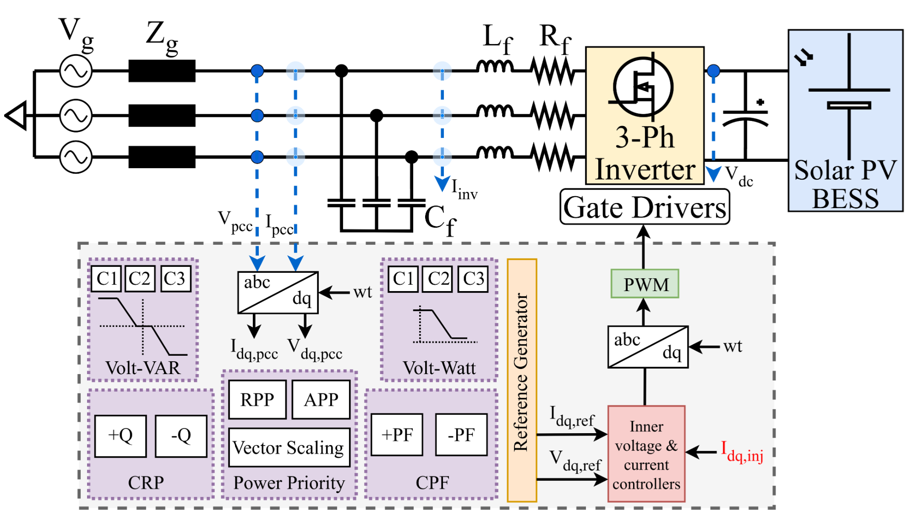
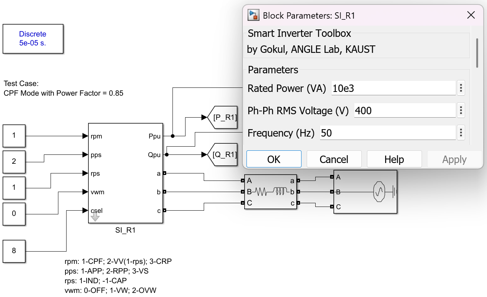
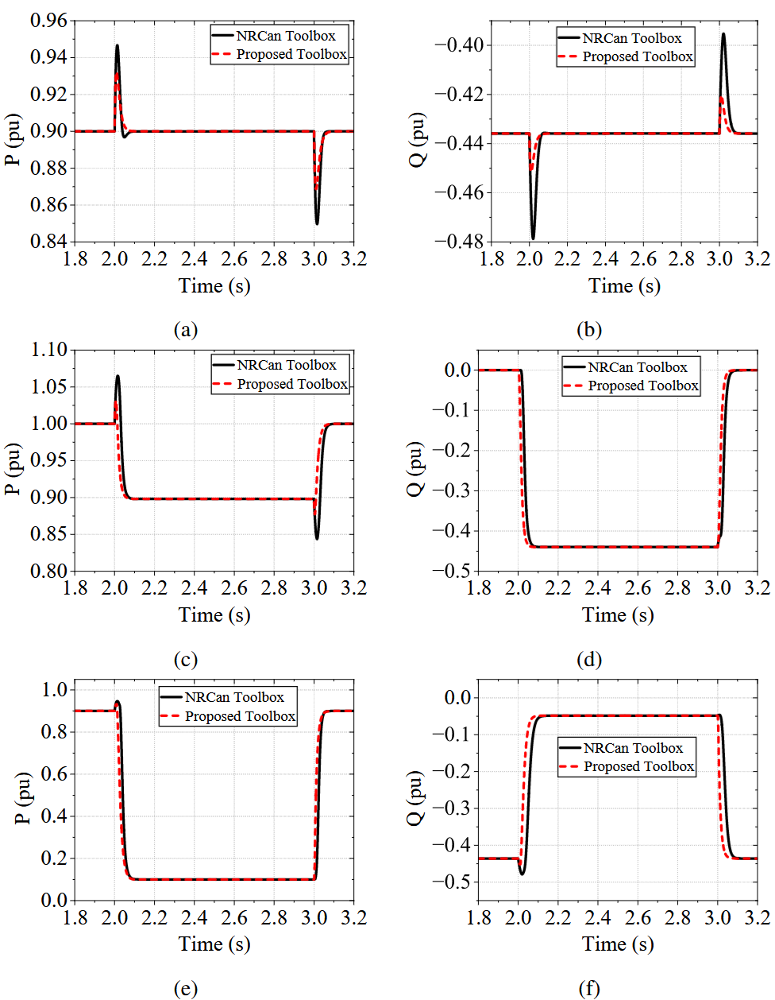
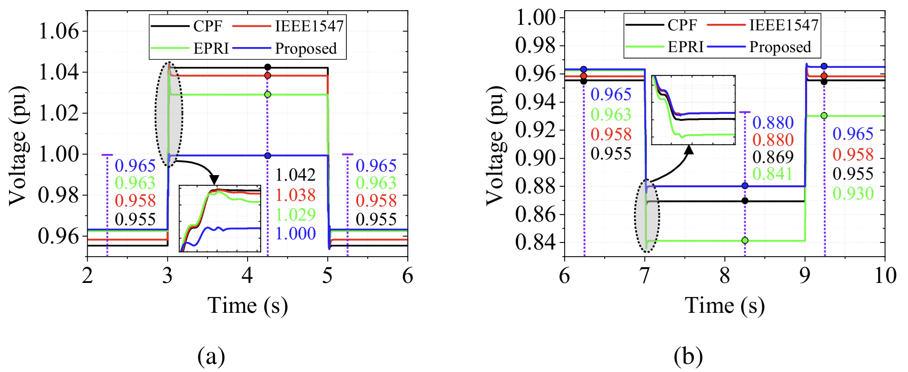
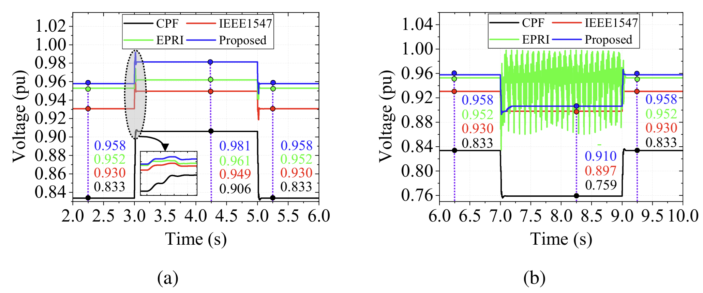
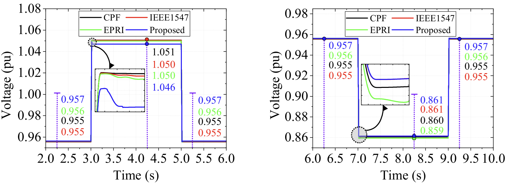
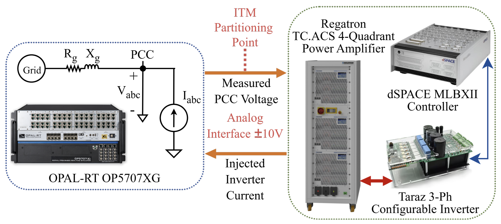
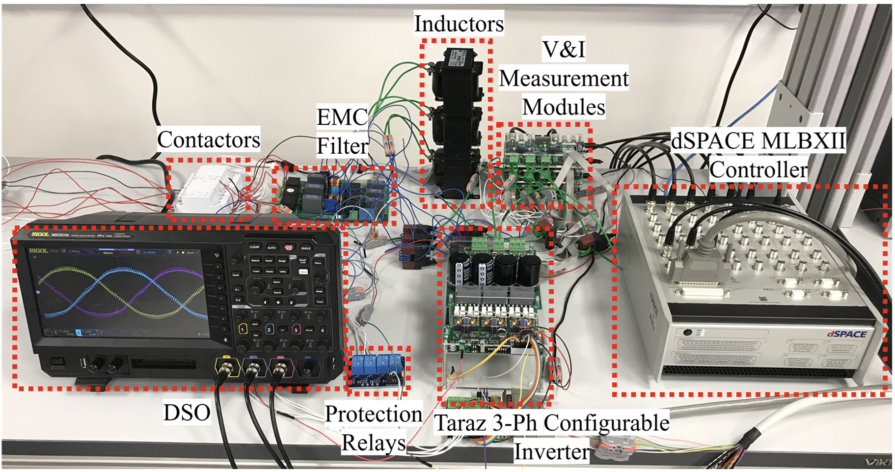
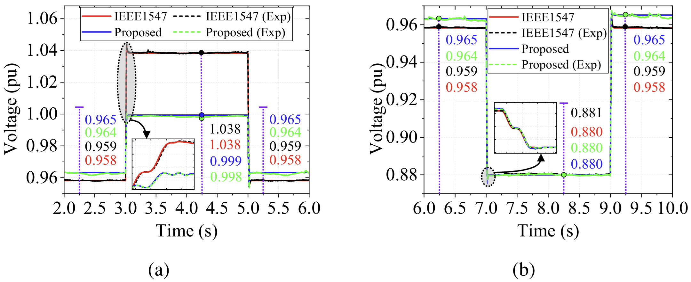

A communication-less, grid-aware SI framework using active/reactive power probing alongside an open-source dynamic Electromagnetic Transient (EMT) Smart Inverter toolbox.
Widespread smart inverter (SI) deployment introduces dynamic interactions because autonomous actions become electrically coupled through feeder impedance. Existing coordination approaches rely heavily on topology knowledge, high-speed communication infrastructure, or manual tuning.
This paper introduces a communication-less framework where each inverter locally estimates equivalent grid resistance ($R_g$) and reactance ($X_g$) via active/reactive power ($P-Q$) probing and adaptively configures control modes and custom curves.

Figure 1: Control diagram of the developed EMT Smart Inverter Toolbox.
Voltage variation at the Point of Common Coupling (PCC) for radial feeders:
Estimated using positive-sequence $dq$-frame components during active/reactive perturbations:
Maximizing voltage regulation capability subject to apparent power capacity:
Smooth hyperbolic tangent function preventing hunting during dynamic sags/swells:
Key variables and thresholds governing $P-Q$ probing, mode selection, filtering, and emergency control.
| Symbol | Parameter Description | Stage / Role | Typical Value / Definition |
|---|---|---|---|
| $\eta_P$ | Active power perturbation coefficient | Stage I: $P-Q$ Probing | $\Delta P_i = \eta_P S_i$ ($0.02 - 0.05$ p.u.) |
| $\eta_Q$ | Reactive power perturbation coefficient | Stage I: $P-Q$ Probing | $\Delta Q_i = \eta_Q S_i$ ($0.02 - 0.05$ p.u.) |
| $\varepsilon_P$ | Steady-state active power fluctuation threshold | Stage I: Probing Readiness Check | $|\Delta P_{L,i}| \le \varepsilon_P$ |
| $\varepsilon_Q$ | Steady-state reactive power fluctuation threshold | Stage I: Probing Readiness Check | $|\Delta Q_{L,i}| \le \varepsilon_Q$ |
| $\varepsilon_V$ | Steady-state PCC voltage fluctuation threshold | Stage I: Probing Readiness Check | $|\Delta V_{\mathrm{PCC},i}| \le \varepsilon_V$ |
| $\lambda_f$ | Low-pass filter coefficient for positive-sequence $dq$ signals | Stage I: Noise Mitigation | $\lambda_f \in (0, 1]$ |
| $T_{\mathrm{set}}$ | Settling time interval before measurement sampling | Stage I: Parameter Estimation | Transient decay buffer |
| $T_{\mathrm{slot}}$ | Time slot duration for sequential priority probing ($\Delta t_1 + \Delta t_2$) | Stage I: Priority Probing Schedule | $t_{p,i} = t_0 + (\kappa_i - 1)T_{\mathrm{slot}}$ |
| $\Delta V_{\min}$ | Minimum voltage impact threshold for support activation | Stage II: Mode Selection Logic | Electrically strong bus filter |
| $T_{\mathrm{dwell}}$ | Minimum dwell time between mode transitions | Stage II: Mode Stability Constraint | $T_{d,i} \ge T_{\mathrm{dwell}}$ |
| $k_Q$ | Emergency voltage control gain | Stage III: Emergency Support | $Q_{i,\mathrm{em}}$ hyperbolic gain |
| $\beta_i(t)$ | Smooth ramping factor for emergency injection | Stage III: Dynamic Support Ramp | $\beta_i(t) = (t - t_{\mathrm{event},i}) H(t - t_{\mathrm{event},i})$ |
| $\dot{V}_{\mathrm{on}}$ | Rate of Change of Voltage (RoCoV) threshold | Stage III: Disturbance Detection | $|\dot{V}_i| \ge \dot{V}_{\mathrm{on}}$ |
Unlike proprietary or quasi-static time-series (QSTS) models, this toolbox permits dynamic real-time mode switching and continuous custom breakpoint adjustment in EMT environments.

Overview of the Smart Inverter Toolbox implemented in MATLAB/Simulink, showing the inverter block configuration and test setup.
Switch through tabs to explore toolbox benchmarking, CIGRE feeder tests, Norwegian grid studies, and PHIL experiments.
Evaluated across identical voltage profiles and inverter parameters. The proposed toolbox was benchmarked against the NRCan model (Ninad et al., IEEE CCECE 2021), accurately reproducing standard IEEE 1547 dynamic characteristics while significantly reducing peak overshoot.
• Active Power Overshoot: Reduced from 5.11% (NRCan) to 3.33%
• Reactive Power Overshoot: Reduced from 9.89% (NRCan) to 3.67%

Figure 2: Active/reactive power response comparison under CPF, VV, and VW modes.

Resistive Network Overvoltage / Undervoltage
Limits voltage to 0.999 p.u. during overvoltage (vs 1.042 p.u. CPF, 1.038 p.u. IEEE 1547) and avoids post-event recovery offsets.

Inductive Feeder Response
Prevents controller hunting and oscillatory instability observed under aggressive EPRI curves, holding 0.910 p.u. during sags.

Figure 11: Feeder voltage responses under overvoltage and undervoltage events.
Evaluated on a 14-smart-inverter distribution system to verify multi-inverter interoperability and scalability across complex feeder topologies.
• Maintains optimal voltage mitigation (1.046 p.u. max rise vs 1.051 p.u. CPF)
• Restores pre-event operational voltage levels seamlessly without transient ringing

1. Real-time PHIL experimental platform: PHIL architecture
Interface setup showing OPAL-RT simulator, Regatron power amplifier, and dSPACE controller.

2. Real-time PHIL experimental platform: hardware inverter testbed
Physical Taraz inverter setup, measurement modules, inductors, protection relays, and oscilloscope.

3. PHIL experimental validation of the proposed framework in the CIGRE LV resistive network
(a) Overvoltage event response and (b) undervoltage event response comparison.
| Bus | Rating (kVA) | Simulated $R_g (\Omega)$ | PHIL Estimated $R_g (\Omega)$ | Simulated $X_g (\Omega)$ | PHIL Estimated $X_g (\Omega)$ |
|---|---|---|---|---|---|
| R15 | 50 | 0.0963 | 0.0964 | 0.0306 | 0.0308 |
| R18 | 45 | 0.1013 | 0.1016 | 0.0376 | 0.0381 |
| R16 (Hardware) | 40 | 0.0644 | 0.0647 | 0.0267 | 0.0269 |